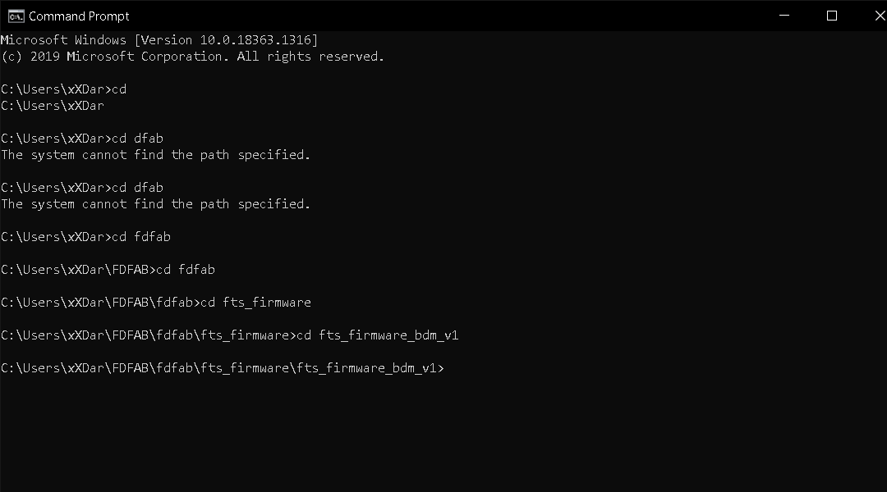
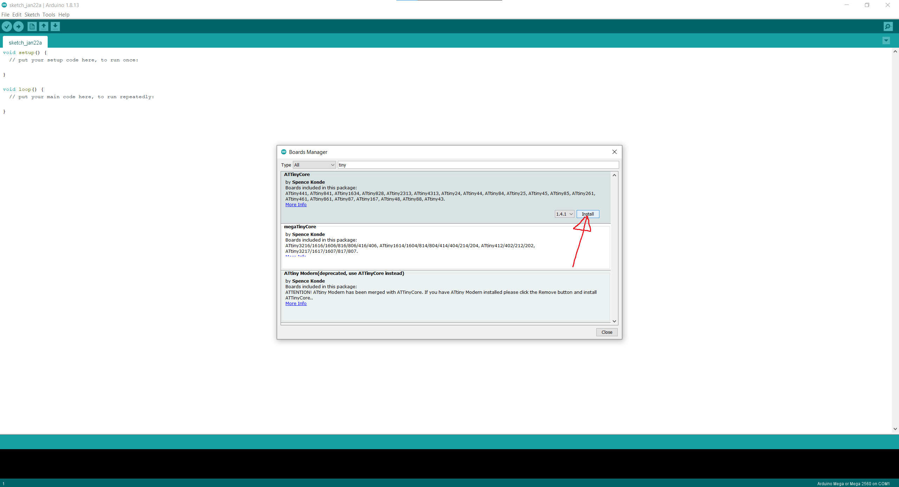
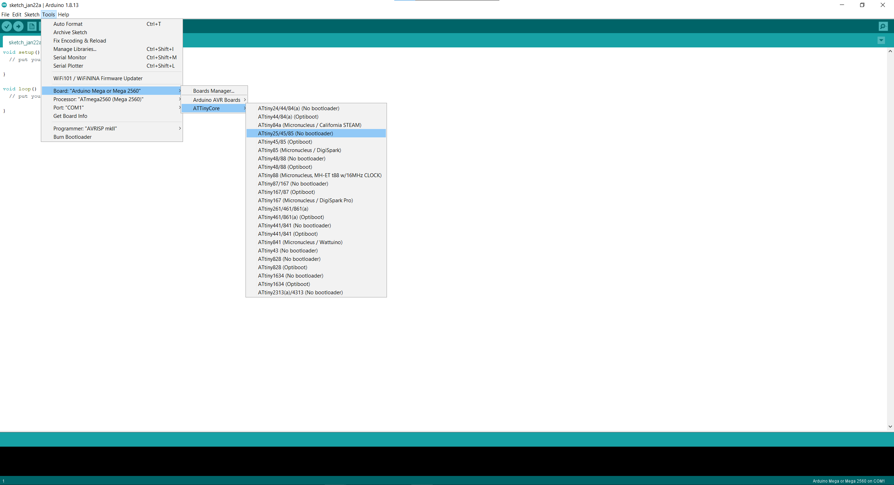

Embedded Programming
ISP Board
To program my programmer board, i first need to find a working programmer board. I know it sounds ridiculous but its true. I need a board to transmit programs to MY board in order for my board to work. For my case, I used Mr Chew's (my lecturer) board.
- Software Download
Before i could do anything, i have to install some softwares.- AVR8 GNU Toolchain
- GNU Make
- AVRdude
- Zadig
- fts software
All these softwares are available at Carlos Siles Projects site.
-
Environment Variable
Once installed, we first have to set the different paths. To do that, all you have to do is simply Control Panel > System and Security > System > Advanced Settings > Environment Variables. Once there, click on the PATH, and add the different paths as shown below.

-
Programming
Once that is done, we can start programming. To do that, just get your command prompt by typing CMD at your windows search bar. Next you need to find you need to find your fts software folder. To do so, just type cd on your command prompt, followed by your folder path, as seen below. Next you need to edit your Makefilefolder if you are using a different type of chip. For me since im using a tiny 85, i will change 45 to 85. Once that is done, i can go ahead and do the command make. After command is completes, a file called fts_firmware.hex will be generated.

Next, run make flash, this command will erase the target chip, and program the flash memory with the contents of the .hex file built. You should see several progress bars while avrdude erases, programs, and verifies the chip.
After programmed the flash memory, the next thing is to set the configuration fuses. First, set the fuses that control where the microcontroller gets its clock source from, because the board works as a USB device and it requires the clock to come from the PLL. Confirmed that USB works, set the fuse that disables the reset pin and turns it into a regular GPIO pin, i.e. letting the chip use the reset pin to program other boards, but will disable the ability for this chip to be programmed. Run the make fuses command. This will set up all of the fuses except the one that disables the reset pin.
Check USB Functionality
Now, the USB should be detected if you were to connect your own board to your computer. If not, all you have to do is use Zadig, and and make sure that it is selected as shown below, then click on install.
Once that is done, head on to device manager and see if your board is detected. If it is, it should be shown as such.
The final steps to turn your board into a working ISP programmer is firstly you need to change the bit that will turn the ATtiny45's reset pin into a GPIO pin, this will disable the ability for this chip to be programmed. When everything is working, connect the working AVR programmer to my board for the last time and run make rstdisbl. This is similar to make fuses command, and include that reset disable bit. After executing, avrdude will never be able to talk to this chip again through the ISP header.

Final step!! Once all that is done, i just execute the program as shown below after connecting my programmer board to my target board. If all goes well, your command prompt should look as such.
{kind=link}
{kind=link}
{kind=link}
{kind=link}
{kind=link}
{kind=link}
{kind=link}
Programming using Arduino
Setting Up
Before we can use arduino to program our hello board, there are some things we first have to do. For starters, we first have to copy and paste the board manager url to the Arduino library manager, which will automatically install a library for the ATTiny. To do so we will head on over to the Arduino software. Once opened, click on File > Preferences. Under Additional Boards Manager URLs, paste this URL: "http://drazzy.com/package_drazzy.com_index.json" and click okay.
{kind=link}
Next we have to restart the software. Once restarted, we will then have to head on over to Tools > Boards: > Boards Manager.... Once there, simply search for "tiny" and install the one by Spence Konde. After installation, we can then select our board. For now, since we are using the ATTiny 85, we select the 25/45/85 (no bootloader). Next important thing is for the Clock: make sure to pick the ones that is internal unless you have an external clock connected to the microcontroller.
 {kind=link}
{kind=link}
Programming
We can now start programming. However before anything, we first have to burn the bootloader first. To do so just Tools > Burn Bootloader while your board and programmer is connected. This will change the fuses to the appropriate settings. Once that is done, when you have to necessary program, verify it and now instead of the traditional way of uploading, for our board, we have to click on Sketch > Upload Using Programmer. This is so that the program will be uploaded to our hello board through our programmer instead of it being uploaded to our programmer, which is what we dont want.
Assignment
For our assingment, we are tasked to program our board. So for simplicity, i decided to just use the blink program that is already given and change it accordingly. Before i do that, i went ahead and Google'd the datasheet for the ATTiny85 chip so as to know what pin my LED is configured to.
{kind=link}
So based off my schematic, my LED is connected to PB4 which is PIN 3. So for the Blink program, i simply changed the pin to 3 and upload it to my board. Unfortunately i do not have a video of my board but here is my friend's one which is basically the same principle.
{kind=link}
Blink program.